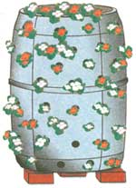

COUNTRY LORE
What a crock of flowers!
A crock of flowers always looks pretty, but where do you find a crock as large as a barrel without spending a fortune?
After capturing a 55-gallon plastic barrel from where I work (a 30-gallon barrel will also do), I brought it home to turn it into something useful. After cutting the top off completely, I used a two-inch hole saw to cut 45 holes around the sides of the barrel.
The barrel was marked off in five rings, evenly spaced apart. To place the first circular mark around the barrel, measure up about five inches from the bottom. This is where your first ring of holes will start.
When drilling the other four rings of holes, stagger the holes so that they all line up diagonally. This will make for a more filled out barrel at maturity (see illustration).
After the holes are completed, fill the barrel with the dirt of your choice. I bought professional potting soil from my local greenhouse grower. I then purchased three colors of begonias and staggered them to make a striped array of blooms around the barrel.
Set the barrel on three bricks so that you can turn it easily once a week to keep foliage growing evenly. By the end of the summer, the barrel will completely disappear and you will have a conversation piece everybody will be talking about.
-Jay Shephard
Candor, NC
|
 |
|
|